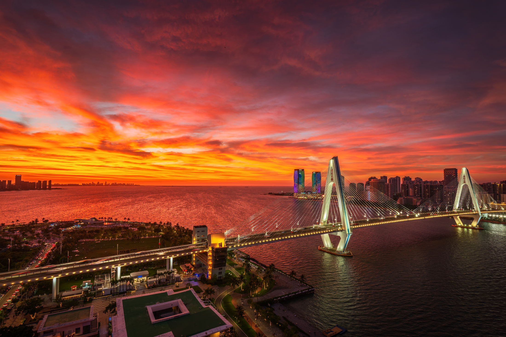

海南最大的
青年摄影师交流组织
成员以海南为主，也有散落在北京、上海、广州、深圳、香港、西安、重庆、长沙的伙伴。

About Us
北纬18度，是海南岛南端所在的纬线；18岁稍后，正是人生最好的时候。 青春有热爱，才更具色彩。
成员以海南为主，也有散落在北京、上海、广州、深圳、香港、西安、重庆、长沙的伙伴。
海岸日出日落、城市夜色爬楼、公期军坡民俗、银河与流星、航拍视角 —— 什么都愿意拍。
一起蹲机位、一起等天气、一起翻车、一起出片。这里更像一个愿意陪你熬夜的群。
「也许有某一个时刻，为了转瞬即逝的七彩祥云，— 18N-MSPA
而不停蹄地奔向机位。」
Selected Works
更多作品在作品集里。
Sunset Forecast
根据云层高度、气溶胶与降水，估算全省主要机位的朝霞与晚霞条件。 东岸拍日出，西岸拍日落，一处看完。